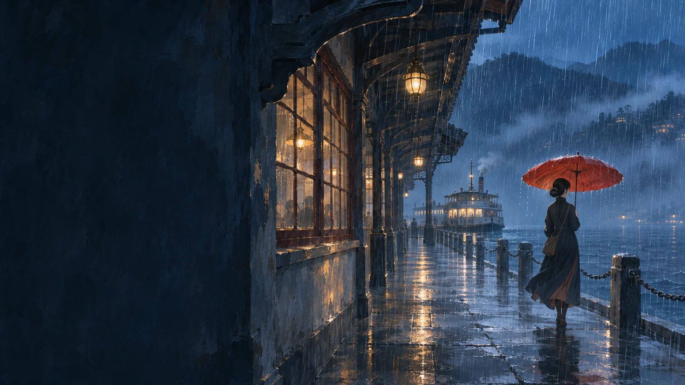

《潮声到站》官网概念画面
分镜预演 · 潮声到站
一把红伞。
四个镜头。
末班船即将开航。先看她跨进渡口，再看她收伞、望江、登船。同一个人物和道具，在不同景别里把这场戏接起来。
00:00
00:14
远景 · 她撑着红伞走到候船楼外。
基于静帧剪辑 · 无声预演
制作工作室实屏
每一步，都有东西可确认。
从原稿出发，沿着五个环节查看各步结果。工作室截图使用演示数据。
从原稿理出分场剧本
原稿与分场剧本可以并读，逐场核对动作、对白和必要的声音。定稿后确认本步，再整理下一步需要的资产。